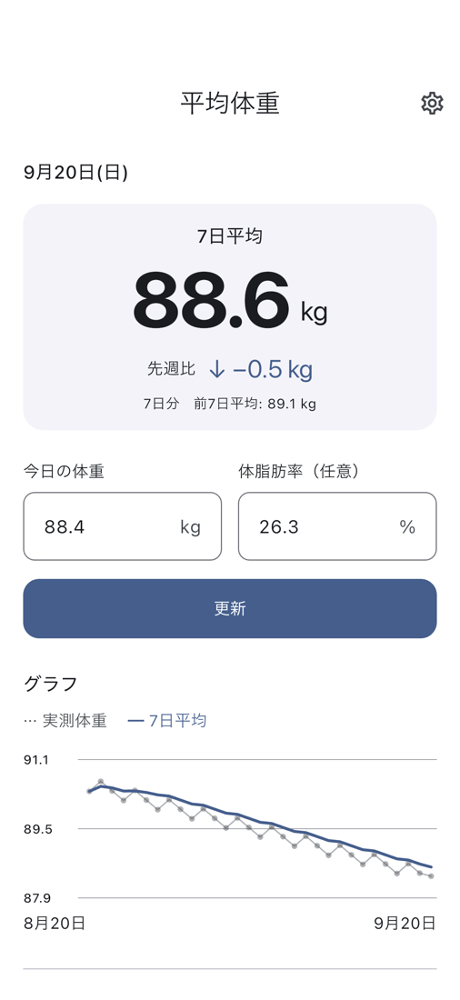
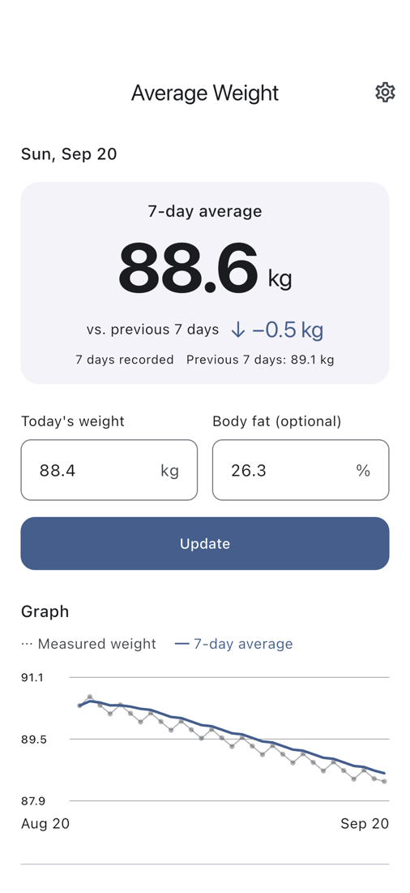

今日の体重を入力
体重を入力して記録。体脂肪率は、測った日だけ追加できます。
7日平均で見る、体重記録
日々の数字だけでは見えにくい変化を、
7日平均でゆっくり確かめる。
入力して、見る。それだけの体重管理アプリです。
iPhone / Android向け · ストア公開準備中

使い方
体重を入力して記録。体脂肪率は、測った日だけ追加できます。
記録した日の体重から自動計算。前の7日間と比べて、変化を確かめます。
グラフで推移を確認。記録を直したいときは、履歴から編集できます。
必要なものだけ
記録は、あなたの端末に
体重や体脂肪率は端末内に保存します。当社サーバーへの送信や、健康情報を広告SDKへ渡すことはありません。
クラウド同期・バックアップ・データ移行には対応していません。広告配信には通信を使用します。
プライバシーポリシーを読む →A SIMPLE WEIGHT DIARY
Look beyond the daily ups and downs.
Record your weight and follow your
seven-day average. That’s all.
For iPhone & Android · Coming to stores

HOW IT WORKS
Enter your weight and save. Add body fat only when you measure it.
Your seven-day average is calculated from recorded days. Compare it with the previous seven days.
Follow the trend on the chart. Correct or delete past entries in History.
JUST THE ESSENTIALS
YOUR RECORDS, ON YOUR DEVICE
Your weight and body fat entries stay on your device. We do not send them to our servers or pass health entries to the advertising SDK.
Cloud sync, backup and data transfer are not provided. Advertising uses an internet connection.
Read our privacy policy →